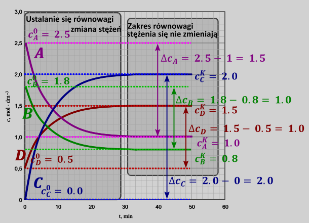
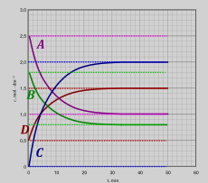
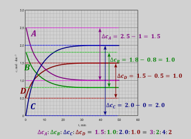
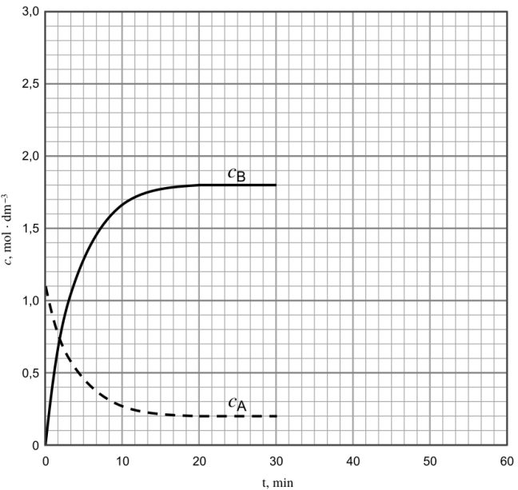
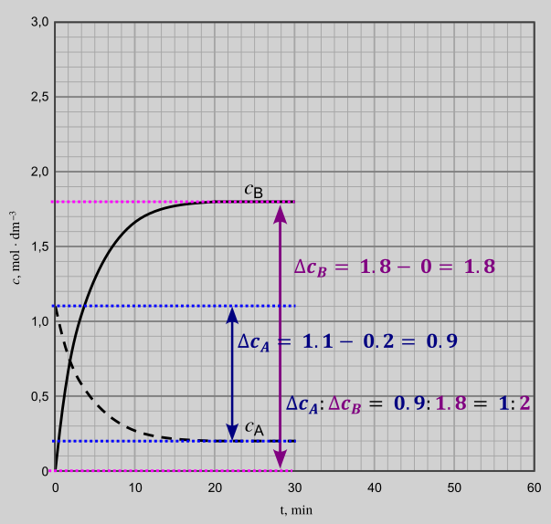
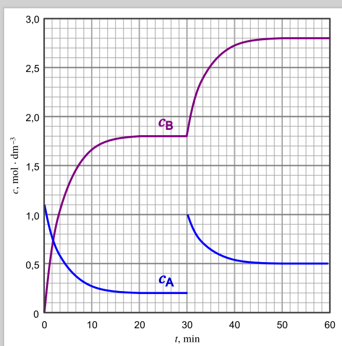
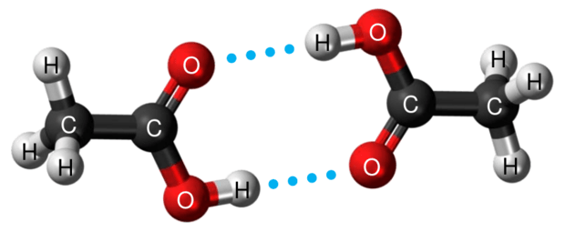
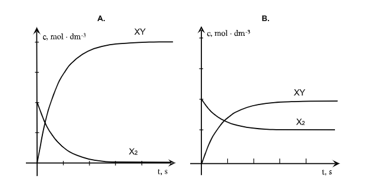
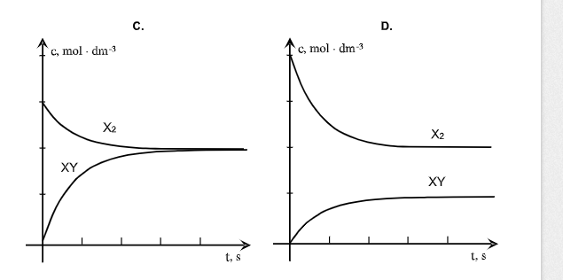
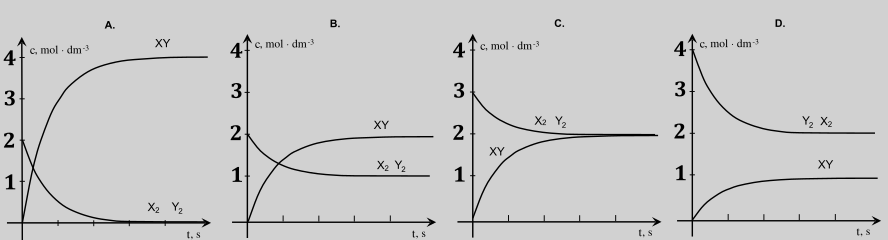

Dla reakcji odwracalnej, czyli takiej, która przebiega odwracalnie czyli w obie strony substraty zamienią się cały czas w produkty, a produkty w substraty, aż do osiągnięcia stanu równowagi, czyli stanu, w którym mamy stężenia reagentów są stałe – w stanie równowagi mamy sensowne ilości zarówno produktów i substratów. Po osiągnięciu stanu równowagi makroskopowo nie widzimy zmian ilości reagentów, jednak nie znaczy to że reakcja nie zachodzi. W stanie równowagi substraty dalej zmienia się w produkty, produkty dalej zamienią się w substraty, ale oba procesy mają tę samą szybkość, co powoduje się wypadkową szybkość zmian równą zero.
Przykładem z życia codziennego jest centrum handlowe. W godzinach szczytu można powiedzieć, że ilość osób wewnątrz się nie zmienia. Ale nie znaczy to, że osoby są tam zamknięte – one po prostu wchodzą i wychodzą z taka sama szybkością, tyle samo wchodzi i wychodzi a więc zmiana wychodzi na zero. Jednak patrząc na jednego konkretnego człowieka (Żyd będący jednocześnie murzynem o rudych włosach i skośnych oczach) będziemy wiedzieć, gdzie jest, kiedy on wszedł i wyszedł. Analogicznie patrząc na jedną cząsteczkę jesteśmy w stanie dokładnie powiedzieć, czym ona obecnie jest (substratem, produktem)

Dla każdej reakcji odwracalnej
\[aA + bB \rightleftarrows cC + dD + eE\]
możemy zdefiniować stałą równowagi \(K\) , jako iloczyn stężeń molowych produktów przez iloczyn stężeń substratów w odpowiednich potęgach równych współczynnikom stechiometrycznym
\[K = \frac{\lbrack C\rbrack^{c}\lbrack D\rbrack^{d}\lbrack E\rbrack^{e}}{\lbrack A\rbrack^{a}\lbrack B\rbrack^{b}}\]
\[\lbrack A\rbrack,\lbrack C\rbrack - \ ilość\ moli\ na\ objętość\ danego\ roztworu;stężenia\ molowe\]
\[a,c - współczynniki\ stechiometryczne\]
Taka definicja stałej równowagi jest uproszczeniem, ale nigdy się na maturze nie zastosowano innej definicji stałej równowagi. Dla gazów poprawnej jest używać w ogólnej termodynamicznej stałej K zamiast stężeń – ciśnienia cząstkowe gazów podzielone przez \(p^{0}\ = 1\ bar\) , to możemy mieć z info wstępnym
\[2NO + O_{2} \rightleftarrows 2NO_{2}\]
Na maturze, jest to tak zwana stężeniowa stała równowagi: \(K = \frac{\left\lbrack NO_{2} \right\rbrack^{2}}{\lbrack NO\rbrack^{2}\left\lbrack O_{2} \right\rbrack}\)
Termodynamicznie poprawnie \(K = \frac{\left( \frac{p_{NO_{2}}}{p^{0}} \right)^{2}}{\left( \frac{p_{NO}}{p_{0}} \right)^{2}\ \left( \frac{p_{O_{2}}}{p_{0}} \right)}\)
Za stężenia ciał stałych wpisujemy jeden. (od tego też istnieje wyjątek – substancje stałe zmieszane na poziomie cząsteczkowym, przede wszystkim stopy metali wówczas zamiast stężenia metalu używamy ułamka molowego metalu, ale z tym nie spotkałem się nawet na konkursach): np. dla reakcji:
\[CuO^{st} + H_{2}^{g} < - \rightarrow Cu^{st} + H_{2}O^{g}\ \ \]
Stałą równowagi tej reakcji można zapisać jako:
\[\ K = \frac{\lbrack Cu\rbrack^{st}\left\lbrack H_{2}O^{g} \right\rbrack^{\ }}{\lbrack CuO\rbrack^{st}\left\lbrack H_{2} \right\rbrack} = \frac{1·\left\lbrack H_{2}O^{g} \right\rbrack^{\ }}{1·\left\lbrack H_{2} \right\rbrack}\]
Wartość stałej równowagi jest generalnie stała. Jedyny parametr, który zmienia wartość stałej to temperatura, inne parametry (np. ilość reagentów, ciśnienie, objętości, stężenia, katalizatory) nie powinny zmieniać stałej równowagi.
Zawsze liczymy mole lub stężenia użytych reagentów.
Robimy tabelke reakcji
Na molach (możemy zawsze)
Na stężeniach molowe (V= const)
Możemy również na
V (p,T=const) dla gazow
P (V, T=const) dla gazow
Piszemy wyrażenia na stałą równowagi (znowu pilnując, aby pominąć stężenia ciał stałych tzn zamiast nich wstawiamy 1)
Do napisanego wyrażenia na stałą wstawiamy dane z tabelki i powinno wyjść równania, którego rozwiązanie da oczekiwany wynik.
Czasem zadania ze stałej połączone są z układami równań, ale analogicznie jak przy zadaniach na układ równań znowu o to żeby zapisać wyrażenia na dane w postaci matematycznej i uzależnić je od mole.
Przydatne czasem jest pojęcie reakcji odwrotnej. Reakcja odwrotna do danej to reakcja, która przebiega w drugą stronę niż dana.
Tzn. Jeżeli mamy reakcję
\[A \rightleftarrows B + C\]
Wyrażenie na jej stałą równowagi możemy zapisać jako
\[K = \frac{\lbrack B\rbrack\lbrack C\rbrack}{\lbrack A\rbrack}\]
Wówczas reakcja odwrotna to taka, która przebiega w drugą stronę niż dana.
\[B + C \rightleftarrows A\]
Stałą tej reakcji możemy opisać jako
\[K_{odrw} = \frac{\lbrack A\rbrack}{\lbrack B\rbrack\lbrack C\rbrack} = \frac{1}{K}\]
Więc w ogólnym wypadku stała równowagi reakcji odwrotnej jest odwrotnością stałej równowagi reakcji.
Reakcja syntezy pewnego związku XY jest opisana równaniem:
\[X_{2}^{g} + Y_{2}^{g} \rightleftarrows 2XY\]
Stężeniowa stała równowagi tej przemiany w temperaturze jest równa \(K_{c} = 4.0\) . W temperaturze T do reaktora o pojemności \(1.0dm^{3}\) wprowadzono po 1.5 mol substancji \(X_{2}\ i\ Y_{2}\) oraz 3.5 mol substancji \(XY\) . Stężeniowa stała równowagi w temperaturze T jest równa \(K_{c} = 4\) . Oblicz stężenie równowagowe substratów ( \(X_{2}\ i\ Y_{2}\) ) opisanej przemiany w temperaturze T.
Najpierw obliczamy początkowe stężenia molowe
\[\left\lbrack X_{2} \right\rbrack^{0} = \frac{n}{V} = \frac{1.5}{1} = 1.5\]
\[\left\lbrack Y_{2} \right\rbrack^{0} = 1.5\]
\[\lbrack XY\rbrack^{0} = 3.5\]
Zapisujemy wyrażenie na stałą równowagi
\[K = \frac{produkty}{substraty} = \frac{\lbrack XY\rbrack^{2}}{\left\lbrack X_{2} \right\rbrack\left\lbrack Y_{2} \right\rbrack} = 4\]
I robimy tabelkę, możemy zrobić ją na stężeniach, gdyż mamy stałą objętość
| \[V = const\] | \[X_{2}\] | \[Y_{2}\] | \[XY\] |
|---|---|---|---|
| \[c^{0}\] | \[1.5\] | \[1.5\] | \[3.5\] |
| \[dc\] | \[- x\] | \[- x\] | \[+ 2x\] |
| \[c^{k}\] | \[1.5 - x\] | \[1.5 - x\] | \[3.5 + 2x\] |
Wyrażenie na stężenie końcowe wstawiamy do wyrażenia na stałą równowagi:
\[K = \frac{\lbrack XY\rbrack^{2}}{\left\lbrack X_{2} \right\rbrack\left\lbrack Y_{2} \right\rbrack} = 4\]
Dostajemy równanie kwadratowe
\[\frac{(3.5 + 2x)^{2}}{(1.5 - x)·(1.5 - x)} = 4\]
Które rozwiązując daje dwa rozwiązania:
\[\frac{3.5 + 2x}{1.5 - x} = 2\ lub\ \frac{3.5 + 2x}{1.5 - x} = - 2\ \ \]
Rozwiązaniami są
\[x = - 0.125\ \ \ \ \ lub\ brak\ rozw\]
Wartość poprawna x to taka, aby ilość moli/ stężeń molowych wszystkich reagentów była na końcu procesu dodatnia. Obliczona wartość x jest ujemna tzn. reakcja przebiega w drugą stronę niż założyliśmy, ale dalej uzyskane końcowe wartości stężeń są dodatnie. Wstawiając tę wartość do tabelki uzyskujemy:
| \[V = const\] | \[X_{2}\] | \[Y_{2}\] | \[XY\] |
|---|---|---|---|
| \[c^{k}\] | \[1.5 - x = 1.625\] | \[1.5 - x = 1.625\] | \[3.5 + 2x = 3.25\] |
Fosgen to silnie trujący związek o wzorze \(COCl_{2}\) . W reakcjach fosgenu z alkoholami otrzymuje się odpowiednie estry kwasu węglowego, a w procesach polikondensacji z udziałem fosgenu powstają poliwęglany – szeroko stosowane tworzywa zastępujące szkło.
Substratami do otrzymywania fosgen są tlenek węgla (II) i chlor. W mieszaninie tych gazów zachodzi – pod wpływem światła – odwracalna reakcja opisana równaniem:
\[CO + Cl_{2} \rightleftarrows COCl_{2}\]
Do reaktora o pojemności 4.0 dm 3 wprowadzono gazowe substraty: 0.4 mol CO i 0.2 mol Cl 2 . Gdy w temperaturze T ustaliła się równowaga stwierdzono, że przereagowało 80% chloru.
Oblicz stężeniową stałą równowagi syntezy fosgenu w temperaturze T.
Na początku obliczamy stężenia początkowe obu reagentów:
\[\lbrack CO\rbrack^{0} = \frac{0.4}{4} = 0.1\]
\[\left\lbrack Cl_{2} \right\rbrack^{0} = \frac{0.2}{4} = 0.05\]
Wstawiamy do tabelki reakcji, w tabelce możemy używać stężeń, gdyż objętość jest stała:
| \[CO\] | \[Cl_{2}\] | \[COCl_{2}\] | |
|---|---|---|---|
| \[c^{0}\] | \[0.1\] | \[0.05\] | \[0\] |
| \[dc\] | \[- x\] | \[- x\] | \[+ x\] |
| \[c^{k}\] | \[0.1 - x\] | \[0.05 - x\] | \[x\] |
Dla każdego reagenta stopień przereagowania, oznaczany \(\alpha\) , to stosunek zmian ilości moli danego reagenta do moli początkowych tego reagenta:
\[\alpha = \frac{\mathrm{\Delta}_{reagent}}{n^{0}}\]
Dla reakcji
\[A + 2B \rightarrow 3C\]
Możemy napisać, iż
| \[A\] | \[B\] | \[C\] | |
|---|---|---|---|
| \[n^{0}\] | \[n_{A}^{0}\] | \[n_{B}^{0}\] | \[0\] |
| \[\mathrm{\Delta}n\] | \[- x\] | \[- 2x\] | \[+ 3x\] |
| \[n^{k}\] |
Jednoznacznie widać, że stopnie przemiany mogą być różne dla różnych substratów
\[\alpha_{A} = \frac{\mathrm{\Delta}n_{A}}{n_{A}^{0}} = \frac{x}{n_{A}^{0}}\]
\[\alpha_{B} = \frac{\mathrm{\Delta}n_{B}}{n_{B}^{0}} = \frac{2x}{n_{B}^{0}}\]
Dla jednej reakcji, ale różnych reagentów stopień przereagowania może być różny. Stopień przereagowania REAGENTA W NIEDOMIARZE, jest równy wydajności reakcji, jeżeli nie mamy innych strat (przyczyn spadku wydajności) w układzie.
Wracając do treści zadania, pisząc równanie na stopień przemiany i wstawiając dane otrzymujemy:
\[\frac{x}{0.05} = 0.8\]
\[x = 0.04\]
Obliczenie końcowych stężeń molowych jest banalnie prost
| \[CO\] | \[Cl_{2}\] | \[COCl_{2}\] | |
|---|---|---|---|
| \[c^{k}\] | \[0.1 - 0.04 = 0.06\] | \[0.05 - 0.04 = 0.01\] | \[x = 0.04\] |
Wartości wstawiam do wyrażenia na stałą K i ją obliczam:
\[K = \frac{\left\lbrack COCl_{2} \right\rbrack}{\lbrack CO\rbrack\left\lbrack Cl_{2} \right\rbrack} = \frac{0.04}{0.01·0.06} = 66.7\]
W wysokiej temperaturze tlenki żelaza można zredukować wodorem do metalicznego żelaza. Redukcja tlenku Fe 3 O 4 przebiega zgodnie z równaniem:
\[Fe_{3}O_{4}^{s} + 4H_{2}^{g} \rightleftarrows 3Fe^{s} + 4H_{2}O^{g}\]
Z reaktora o pojemności 8.0dm 3 , zawierającego 420 tlenku Fe 3 O 4 , odpompowano powietrze i wprowadzono 6.0 g wodoru. Zawartość reaktora ogrzano do temperatury T, w której stała równowagi powyższej reakcji wynosi 0.20
Oblicz stężenie pary wodnej w reaktorze po ustaleniu się stanu równowagi oraz masę otrzymanego żelaza.
Obliczam mole początkowe reagentów:
\[n_{Fe_{3}O_{4}}^{0} = \frac{420}{56·3 + 64} = 1.81\]
\[n_{H_{2}}^{0} = \frac{6}{2} = 3\]
Kolejno wykonuję tabelkę bilansu reakcji, bezpiecznej jest posługiwać się molami, gdyż mówienie o stężeniu molowym ciała stałego w gazie jest proszeniem się o kłopoty.
| \[Fe_{3}O_{4}\] | \[H_{2}\] | \[Fe\] | \[H_{2}O\] | |
|---|---|---|---|---|
| \[n^{0}\] | \[1.81\] | \[3\] | ||
| \[dn\] | \[- x\] | \[- 4x\] | \[+ 3x\] | \[+ 4x\] |
| \[n^{k}\] | \[1.81 - x\] | \[3 - 4x\] | \[3x\] | \[4x\] |
Kolejno piszemy wyrażenie na stałą równowagi, uwzględniamy tylko gazy, natomiast za wartości stężeń ciał stałych wstawiamy jeden.
\[K = \frac{\left\lbrack H_{2}O \right\rbrack^{4}}{\left\lbrack H_{2} \right\rbrack^{4}}\]
Oczywiście w wyrażeniu są stężenia, a w tabelce mole, jak \(c = \frac{n}{V}\) . Objętość zgodnie z warunkami zadania wynosi 4dm 3 , co daje nam:
\[K = \frac{\left\lbrack H_{2}O \right\rbrack^{4}}{\left\lbrack H_{2} \right\rbrack^{4}} = \frac{\left( \frac{4x}{4} \right)^{4}}{\left( \frac{3 - 4x}{4} \right)^{4}} = 0.2\]
Możemy teraz rozwiązać to równanie, rozwiązanie daje nam dwie wartości x:
\[x_{1} = - 1.51\ \ \ lub\ \ \ \ \ \ x_{2} = 0.3\]
Oczywiście poprawna jest druga wartość, gdyż pierwsza wartość prowadzi do ujemnych wartości moli końcowych.
Wstawiając wartości x do tabelki dostajemy:
| \[Fe_{3}O_{4}\] | \[H_{2}\] | \[Fe\] | \[H_{2}O\] | |
|---|---|---|---|---|
| \[n^{k}\] | \[1.81 - 0.3 = 1.51\] | \[3 - 4x = 3 - 4·0.3 = 1.8\] | \[3x = 0.9\] | \[4x = 1.2\] |
Z uzyskane wartości końcowych moli możemy obliczyć stężenie molowe pary wodnej i masę otrzymanego żelaza.
\[m_{Fe} = n_{Fe}·M_{Fe} = 0.9·56 = 50.4g\]
\[\left\lbrack H_{2}O \right\rbrack = \frac{n_{H_{2}O}}{V} = \frac{1.2}{4} = 0.3\frac{mol}{dm^{3}}\]
Do reaktora wprowadzono próbkę \(N_{2}O_{4}\) o masie równej 4.14g. W reaktorze utrzymywano stałe ciśnienie równe 1000hPa i stałą temperaturę 298K, natomiast zmianie mogła ulegać pojemność. W warunkach prowadzenia eksperymentu ustaliła się równowaga chemiczna opisana równaniem:
\[N_{2}O_{4} \rightleftarrows 2NO_{2}\]
Objętość mieszaniny obu tlenków, po ustaleniu się stanu równowagi, była równa 1.32 dm 3 . Oblicz stężeniową stałą równowagi K c przemiany w opisanych warunkach. Stała gazowa R=83.14hPa dm 3 mol -1 K -1 . Przyjmij, że NO 2 i N 2 O 4 .
Zadanie rozpoczynamy od obliczenia początkowej ilości moli
\[n_{N_{2}O_{4}}^{0} = \frac{4.14}{2·14 + 4·16} = 0.045\]
Kolejno możemy zrobić tabelkę związaną z reakcją używając moli, nie możemy używać stężeń molowych, gdyż w tym wypadku zmienia się również objętość. Oczywiście znając końcową objętość układu możemy uzależnić stężenia molowe
| \[N_{2}O_{4}\] | \[NO_{2}\] | ||
|---|---|---|---|
| \[n^{0}\] | \[0.045\] | \[0\] | |
| \[dn\] | \[- x\] | \[+ 2x\] | |
| \[n^{k}\] | \[\mathbf{0.045 - x}\] | \[\mathbf{+ 2}\mathbf{x}\] | |
| \[c^{k}\] | \[\frac{0.045 - x}{1.32}\] | \[\frac{2x}{1.32}\] |
Widać, że wstawienie stężeń do wyrażenia na stałą równowagi nie daje rozwiązania.
\[K = \frac{\left\lbrack NO_{2} \right\rbrack^{2}}{\left\lbrack N_{2}O_{4} \right\rbrack} = \frac{\left( \frac{2x}{1.32} \right)^{2}}{\frac{0.045 - x}{1.32}}\]
gdyż mamy jedno równanie, a dwie niewiadome. Potrzebujemy więc drugiego równania. Analizując treść zadania widzimy, iż poza objętością mamy podane ciśnienie całkowite i temperaturę. Wzór, który łączy te dwie parametry to wzór Clapeyrona:
\[p_{calk}V = n_{calk}RT\]
\[1000·1.32 = n_{calk}·83.145·298 \rightarrow n_{calk} = 0.0533\]
Oczywiście mając całkowite mole obu gazów może powiedzieć że jest to suma tych moli, a więc z wykorzystując mole z tabelki możemy obliczyć x.
\[n_{calk} = 0.0533 = n_{N_{2}O_{4}}^{k} + n_{NO_{2}}^{k}\]
\[0.0533 = 0.045 - x + 2x\]
\[x = 0.00829\]
Mamy x wstawiamy do wzorów na stężenia końcowe
\[\left\lbrack NO_{2} \right\rbrack = \frac{2x}{1.32} = \frac{2·0.00829}{1.32} = 0.0126\]
\[\left\lbrack N_{2}O_{4} \right\rbrack = \frac{0.045 - 0.00829}{1.32} = 0.0278\]
A ze stężeń możemy obliczyć stałą równowagi
\[K = \frac{\left\lbrack NO_{2} \right\rbrack^{2}}{\left\lbrack N_{2}O_{4} \right\rbrack} = \frac{{0.0126}^{2}}{0.0278}\]
W zamkniętym zbiorniku znajdowała się pewna ilość \(NO_{2}\) . W temperaturze 800K gaz ulegał rozkładowi zgodnie z równaniem:
\[2NO_{2}^{g} < - \rightarrow 2NO^{g} + O_{2}^{g}\]
Po ustalenie się stanu równowagi w naczyni znajdowało się 90g tlenku azotu (II). Wydajność rozkładu \(NO_{2}\) wynosiła 60%.
Okresl:
Stosunek molowy tlenków azotu w zbiorniku w stanie równowagi
Liczbę moli tlenu w zbiorniku w stanie równowagi
Masę tlenku azotu (IV) wprowadzonego do zbiornika przed zainicjowanem reakcji w gramach.
Rozwiązanie zadania polega na obliczeniu liczby moli, są to oczywiście są to mole po reakcji
\[\ n_{NO}^{k} = \frac{90}{16 + 14} = 3\ mol\]
Wstawiając te dane do tabelki uzyskujemy:
| \[NO_{2}\] | \[NO\] | \[O_{2}\] | |
|---|---|---|---|
| \[n^{0}\] | \[n_{NO_{2}}^{0}\ \] | \[0\] | \[0\] |
| \[dn\] | \[- 2x\] | \[+ 2x\] | \[+ x\] |
| \[n^{k}\] | \[n_{NO_{2}}^{0}\mathbf{- 2}\mathbf{x}\] | \[\mathbf{2}\mathbf{x = 3 \rightarrow x = 1.5}\] | \[x\] |
| \[n^{k}\] | \[n_{NO_{2}}^{0}\mathbf{- 3}\] | \[\mathbf{3}\] | \[1.5\] |
Oczywiście przyrównanie ilość moli końcowa NO umożliwia obliczenie x: 2x=3-> x=1.5
Kolejno znając x zastosujemy wydajność rozkładu tlenku azotu, która w tym wypadku jest po prostu stopniem przereagowania, możemy obliczyć początkową ilość moli:
\[\alpha = \frac{2x}{n_{NO_{2}}^{0}} = 0.6 \rightarrow \frac{3}{n_{NO_{2}}^{0}} = 0.6 \rightarrow \frac{3}{0.6} = n_{NO_{2}}^{0} = 5\]
Używając początkowej ilości moli możemy bardzo łatwo udzielić już odpowiedzi na zadane pytania.
Stężeniowa stała równowagi reakcji przebiegającej zgodnie z równaniem:
\[H_{2}^{g} + CO_{2}^{g} \rightleftarrows CO^{g} + H_{2}O^{g}\ \ \ \]
W temperaturze 800K wynosi 0.24
Do zamknięteo reaktora o stałej objętości wprowadzono 2mole CO 2 i 2mole H 2 . W reaktorze w którym utrzymywano temperaturę 800K, ustalił się stan równowagi opisanej reakcji.
Oblicz, jaki procent początkowej liczby cząsteczek CO 2 i H 2 uległ przekształceniu w CO i H 2 O.
Zadanie klasycznie rozpoczynamy od zrobienia tabelki i napisania wyrażenia na stałą równowagi. Tabelkę robimy na molach, gdyż jest to jedyna wartość podana, nie ma stężeń ani objętości.
| \[H_{2}\] | \[CO_{2}\] | \[CO\] | \[H_{2}O\] | |
|---|---|---|---|---|
| \[n^{0}\] | 2 | 2 | 0 | 0 |
| \[dn\] | -x | -x | +x | +x |
| \[n^{k}\] | 2-x | 2-x | x | X |
Zapisując wyrażenie na stałą równowagi otrzymujemy i uzależniając stężenia molowe od moli i objętości
\[K = \frac{\lbrack CO\rbrack\left\lbrack H_{2}O \right\rbrack}{\left\lbrack H_{2} \right\rbrack\left\lbrack CO_{2} \right\rbrack} = \frac{\frac{n_{CO}}{V}\frac{n_{H_{2}O}}{V}}{\frac{n_{H_{2}}}{V}\frac{n_{CO_{2}}}{V}} = \frac{n_{CO}n_{H_{2}O}}{n_{H_{2}}n_{CO_{2}}}\]
Objętości zawsze skracają się, jeżeli masz tyle samo produktów gazowych / ciekłych po lewej i prawej stronie równania , wówczas do wyrażenia na stałą równowagi możemy wstawiać mole reagentów zamiast stężeń.
Wstawiając wartości z tabelki otrzymujemy:
\[K = \frac{x^{2}}{(2 - x)^{2}} = 0.24\]
Rozwiązując to równanie obliczamy x
\[\frac{x}{2 - x} = 0.489\]
\[x = 0.980 - 0.489x\]
\[x = 0.658\]
I obliczamy stopień przemiany jednego i drugiego reagenta
\[\alpha = \frac{x}{n^{0}} = \frac{0.658}{2} = 0.329 = 32.9\%\]
W zamkniętym reaktorze o stałej pojemności umieszczone n moli jodowodoru i utrzymywano stałą temperaturę. W reaktorze zachodziła reakcja rozkłada jodowodoru opisana równaniem:
\[\mathbf{2}\mathbf{HI}\mathbf{\rightleftarrows}\mathbf{H}_{\mathbf{2}}\mathbf{+}\mathbf{I}_{\mathbf{2}}\]
Po ustaleniu się stanu równowagi stwierdzono, że rozkładowi uległo 16.7% początkowej liczby moli jodowodoru.
Oblicz stężeniową stałą równowagi rozkładu jodowodoru w opisanych warunkach.
Nic nie mamy, ale mimo tego możemy zrobić tabelkę uwzględniając ilość przereagowanych moli
| \[HI\] | \[H_{2}\] | \[I_{2}\] | |
|---|---|---|---|
| \[n^{0}\] | \[n^{0}\] | \[0\] | \[0\] |
| \[dn\] | \[- 2x\] | \[+ x\] | \[+ x\] |
| \[n^{k}\] | \[n^{0} - 2x\] | \[x\] | \[x\] |
Możemy teraz zapisać wyrażenie na stopień przereagowania:
\[\alpha = \frac{2x}{n^{0}} = 0.167\]
Co daje nam powymnożeniu:
\[x = 0.0835n^{0}\]
Ogólnie wolimy mieć jedną niewiadomą niż dwie niewiadomie, więc przekształconą powyżej wartość x wstawiamy do tabelki:
| \[HI\] | \[H_{2}\] | \[I_{2}\] | |
|---|---|---|---|
| \[n^{k}\] | \[n^{0} - 2·0.0835n^{0} = 0.833n^{0}\] | \[x = 0.0835n^{0}\] | \[x = 0.0835n^{0}\] |
I zapisując wyrażenie na stałą \(K\) po wstawieniu powyższych danych widzimy, że skraca się zarówno n 0 i V , co umożliwia obliczenie wartości stałej równowagi:
\[K = \frac{\left\lbrack H_{2} \right\rbrack\left\lbrack I_{2} \right\rbrack}{\lbrack HI\rbrack^{2}} = \frac{\left( \frac{0.0835n^{0}}{V}·\frac{0.0835n^{0}}{V} \right)}{\left( \frac{0.833n^{0}}{V} \right)^{2}} = \frac{(0.0835)^{2}}{(0.833)^{2}} = 0.01\]
Wykorzystując obliczoną powyżej wartość stałej równowagi, oblicz jaki bedzie stopień przemiany \(HI\) jeżeli w zamkniętym reaktorze w tej temperaturze T umieszczono równomolową (tzn. po tyle samo moli ) mieszaninę \(HI\ i\ \ \ I_{2}\) .
Rozpoczynamy od wykonania tabelki:
| \[HI\] | \[H_{2}\] | \[I_{2}\] | |
|---|---|---|---|
| \[n^{0}\] | \[n^{0}\] | \[0\] | \[n^{0}\] |
| \[dn\] | \[- 2x\] | \[+ x\] | \[+ x\] |
| \[n^{k}\] | \[n^{0} - 2x\] | \[x\] | \[n^{0} + x\] |
Możemy zapisać, że stopień przereagowania równy jest
\[\alpha = \frac{2x}{n_{o}}\]
Ogólnie w zadaniu szukamy stopnia przereagowania, więc wolimy mieć go w wyrażeniu na stałą. Możemy więc uzależnić x od tego stopnia, przekształcając powyższy wzór.
\[x = \frac{\alpha n^{0}}{2}\]
I wstawiając uzależnioną wartość x do tabelki.
| \[HI\] | \[H_{2}\] | \[I_{2}\] | |
|---|---|---|---|
| \[n^{k}\] |
\[n^{0} - 2\frac{\alpha n^{0}}{2} =\] \[n^{0}(1 - \alpha)\] |
\[x = \frac{\alpha n^{0}}{2}\] |
\[n^{0} + \frac{\alpha n^{0}}{2} =\] \[n^{0}\left( 1 + \frac{\alpha}{2} \right)\] |
Kolejno zapisanie wyrażenia na stałą równowagi i wstawienie do wyrażenia powoduje skrócenie początkowej liczby moli oraz objętości w wyrażeniu i uzyskaniu wyrażenia z jedną zmienną – stopniem przereagowania. Rozwiązując to równanie dostaniemy wartość liczbową tego stopnia.
\[K = \frac{\left\lbrack H_{2} \right\rbrack\left\lbrack I_{2} \right\rbrack}{\lbrack HI\rbrack^{2}} = \frac{\frac{\frac{\alpha n^{0}}{2}}{V}·\frac{n^{0}\left( 1 + \frac{\alpha}{2} \right)}{V}}{\left( \frac{n^{0}(1 - \alpha)}{V} \right)^{2}} = \frac{\frac{\alpha}{2}·\left( 1 + \frac{\alpha}{2} \right)}{(1 - \alpha)^{2}} = 0.01\]
\[\alpha = 0.019 = 1.9\%\]
W reaktorze o pojemności 1dm 3 umieszczono 2.00 mole A oraz 6.00 moli substancji B i w temperaturze T przeprowadzono reakcję egzotermiczną, która przebiegła zgodnie z poniższym schematem:
\[A^{g} + 2B^{g} \rightleftarrows 2C^{g}\]
Po osiągnięciu stanu równowagi stwierdzono, że substancja A przereagowała w 78%.
Oblicz stężeniową stałą równowagi w temperaturze T prowadzenia procesu. Wynik zaokrąglij do drugiego miejsca po przecinku.
Kolejno wstawiamy obliczone mole do tabelki:
| \[A\] | \[B\] | \[C\] | |
|---|---|---|---|
| \[n^{0}\] | \[2\] | \[6\] | \[0\] |
| \(dn\) (przereagowało) | \[- x\] | \[- 2x\] | \[+ 2x\] |
| \(n^{k}\) (zostało) | \[2 - x\] | \[6 - 2x\] | \[2x\] |
Następnie zapisujemy wyrażenie na stopień przereagowania reagenta A i obliczamy wartość zmiennej x
\[\frac{dn_{A}}{n_{A}^{0}} = \frac{x}{2} = 0.78\]
\[x = 1.56\]
Posiadając zmiennej x możemy wstawić ją do tabelki i obliczyć poszczególne mole końcowe.
| \[A\] | \[B\] | \[C\] | |
|---|---|---|---|
| \(n^{k}\) (zostało) | \[2 - 1.56 = 0.44\] | \[6 - 2x = 6 - 2·1.56 = 2.88\] | \[2x = 2·1.56 = 3.12\] |
Mamy objętość równą 1 dm 3 czyli stężenia są liczbowo równe molom.
Kolejno zapisujemy wyrażenie na stałą równowagi i wstawiamy obliczone wartości stężeń:
\[K = \frac{\left\lbrack C_{r} \right\rbrack^{2}}{\left\lbrack B_{r} \right\rbrack^{2}\left\lbrack A_{r} \right\rbrack} = \frac{{3.12}^{2}}{{2.88}^{2}·0.44} = 2.67\]
Zadanie:
Do reakcji powyższej po osiągnięciu stanu równowagi dodano 1 mol A, 2 mole B i 3 mole C. Wskaż kierunek zachodzenia reakcji
Jezeli chcielibysmy to zrobić tabelką to zrobimy tak
\[A + 2B \rightleftarrows 2C\]
| A | B | C | |
|---|---|---|---|
| \[c^{0}\] | \[\text{ }0.44 + 1 = 1.44\] | \[\text{ }2.88 + 2 = 4.88\] | \[\text{ }3.12 + 3 = 6.12\] |
| \(dc\) (przereagował o) | \[- x\] | \[- 2x\] | \[+ 2x\] |
| \(c^{k}\) (zostało) | \[1.44 - x\] | \[4.88 - 2x\] | \[6.12 + 2x\] |
Objętość jest 1dm 3 , czyli mole są liczbowo równe stężeniu.
Wstawienie ilości moli z tabeli do wyrażenia na stała daje równanie jednej zmiennej czyli teoretycznie da się rozwiązać, ale jednocześnie jest to równanie sześcienne czyli mamy duży problem matematyczny
\[K = \frac{\left\lbrack C_{r} \right\rbrack^{2}}{\left\lbrack B_{r} \right\rbrack^{2}\left\lbrack A_{r} \right\rbrack} = \frac{(6.12 + 2x)^{2}}{(4.88 - 2x)^{2}(1.44 - x)} = 2.67\]
\[(6.12 + 2x)^{2} = 2.67·(4.88 - 2x)^{2}(1.44 - x)\]
Jakby było to równanie kwadratowe to można byłoby rozwiązać normalnie obliczaniem delty (i tutaj mamy x, który może wyjść ujemny – co znaczyłoby że reakcje biegnie w drugą stronę niż założyliśmy, warunek konieczny dla poprawności x to końcowe mole mają być dodatnie)
Mamy równanie 3 stopnia – więc jedyna sensowna metoda rozwiązania to posługiwanie się kalkulatorem naukowym w stopniu bardzo dobrym (np. Casio fx-991). Rozwiązaniem tego problemu jest
\[0.4751 = x\]
Inną prostszą obliczeniowo metodą jest posłużenie się ilorazem reakcji. Porównując jego wartość ze stałą równowagi reakcji można ustalić kierunek zachodzenia tejże reakcji. Iloraz reakcji (Q) jest zdefiniowany dokładnie tak jak stała równowagi, ale zamiast stężeń równowagowych wstawiamy stężenia chwilowe, w danej chwili. W tym wypadku możemy wstawić stężenia w chwili początkowej, po dodaniu dodatkowej porcji reagentów: Wyrażenie na stałą równowagi omawianej reakcji ma postać
\[K = \frac{\left\lbrack C_{r} \right\rbrack^{2}}{\left\lbrack B_{r} \right\rbrack^{2}\left\lbrack A_{r} \right\rbrack}\]
I dotyczy tylko stężeń równowagowych
Analogicznie wyrażenie na iloraz reakcji ma postać
\[Q = \frac{\left\lbrack C_{0} \right\rbrack^{2}}{\left\lbrack B_{0} \right\rbrack^{2}\left\lbrack A_{0} \right\rbrack}\]
I dotyczy stężeń w dowolnym momencie prowadzenia reakcji, w tym wypadku mogą to być początkowe po dodaniu dodatkowej porcji
\[Q = \frac{\lbrack 6.12\rbrack^{2}}{{4.88}^{2}·1.44} = 1.092\]
Obliczona wartość ilorazu reakcji możemy porównać z wartością stałą reakcji.
Warianty są trzy
\(Q < K\) →w Q za duży mianownik (substraty), a za mały licznik(produkty)→reakcja w strone produktów czyli w prawo
\(Q = K\) →reakcja w stanie równowagi
\(Q > K\) →w Q za mały mianownik (substraty), a za duży licznik(produkty)→reakcja w strone substratów czyli w lewo
W tym wypadku widzimy, iż \(Q < K\) więc reakcja przebiega w stronę produktów. Wykorzystując Q nie jesteśmy w stanie nic powiedzieć o wartości ilości moli w stanie równowagi, jedynie możemy określić kierunek zachodzenia reakcji.
Stężeniowa stała równowagi reakcji:
\[CO^{g} + H_{2}O^{g} \rightleftarrows CO_{2}^{g} + H_{2}^{g}\]
W temperaturze 1000K jest równa 1.
W reaktorze o stałej pojemności znajdowało się 6 moli tlenku węgla(II)
Oblicz ile moli wody (w postaci pary wodnej) należy wprowadzić do reaktora, aby po ustaleniu się równowagi w temperaturze 1000K liczba moli wodoru była dwa razy większa od liczby moli tlenku węgla (II)
Oczywiście zaczynamy od zapisania wyrażenia na stałą K, w tym wypadku można stosować mole w tym wyrażeniu, gdyż suma współczynników substratów gazowych jest równa sumie współczynników produktów gazowych w równaniu reakcji, co powoduje skrócenie objętości
\[K = \frac{\left\lbrack CO_{2} \right\rbrack\left\lbrack H_{2} \right\rbrack}{\lbrack CO\rbrack\left\lbrack H_{2}O \right\rbrack} = \frac{\frac{n_{CO_{2}}}{V}\frac{n_{H_{2}}}{V}\ \ \ }{\frac{n_{CO}}{V}\frac{n_{H_{2}O}}{V}} = \frac{n_{CO_{2}}n_{H_{2}}}{n_{CO}n_{H_{2}O}} = 1\]
| \[CO\] | \[H_{2}O\] | \[CO_{2}\] | \[H_{2}\] | |
|---|---|---|---|---|
| \[n^{0}\] | \[6\] | \[n_{H_{2}O}^{0}\] | ||
| \[\mathrm{\Delta}n\] | \[- x\] | \[- x\] | \[+ x\] | \[+ x\] |
| \[n^{k}\] | \[6 - x\] | \[n_{H_{2}O}^{0} - x\] | \[+ x\] | \[x\] |
Widać , iż wstawiając te wartości do wyrażenia na stałą równowagi uzyskujemy równanie dwóch niewiadomych, a więc potrzebuje znaleźć jeszcze jedno równanie. To równanie jest ukryte w ostatnim zdaniu zadania „ w stanie równowagi… liczba moli wodoru była dwa razy większa od liczby moli tlenku węgla (II)” . zapisanie tego wyrażenia daje
\[n_{H_{2}}^{k} = 2n_{CO}\]
Wstawienie wartości ilości moli z tabelki prowadzi do obliczenia wartości x
\[x = 2·(6 - x)\]
\[x = 4\]
Kolejno możemy wstawić wartość x do tabelki
| \[CO\] | \[H_{2}O\] | \[CO_{2}\] | \[H_{2}\] | |
|---|---|---|---|---|
| \[n^{k}\] | \[2\] | \[n_{H_{2}O}^{0} - 4\] | \[4\] | \[4\] |
I po zapisaniu wyrażania na stałą równowagi i wstawieniu moli równowagowych dostajemy:
\[K = \frac{n_{CO_{2}}n_{H_{2}}}{n_{CO}n_{H_{2}O}} = 1\]
\[\frac{4·4}{2(n_{H_{2}O}^{0} - 4)} = 1\]
Z czego możemy obliczyć ilość moli początkową wody użytej do reakcji.
Dwa gazy A i B zmieszane w stosunku molowym \(n_{A}:n_{B}\ = \ 1:4\) zajmują w warunkach normalnych objętość \(1dm^{3}\) . Tę mieszaninę umieszczono w reaktorze o stałej pojemności \(1dm^{3}\) i w temperaturze T zainicjowano reakcję. W tej temperaturze ustalił się stan równowagi opisany równaniem
\[A^{g} + 2B^{g} \rightleftarrows 2C^{g}\]
W stanie równowagi stężenie substancji C było równe \(0.004mol·dm^{- 3}\) . Oblicz stężeniową stałą równowagi ( \(K_{C}\) ) opisanej reakcji w temperaturze T.
Wychodzimy od zapisania wyrażenia na stałą równowagi:
\[K = \frac{\lbrack C\rbrack^{2}}{\lbrack A\rbrack\lbrack B\rbrack^{2}}\]
| \[A\] | \[B\] | \[C\] | |
|---|---|---|---|
| \[n^{0}\] | \[n_{A}^{0}\] | \[n_{B}^{0}\] | |
| \[dn\] | \[- x\] | \[- 2x\] | \[+ 2x\] |
| \[n^{k}\] | \[0.004 = 2x \rightarrow x = 0.002\] |
\[\frac{n_{A}^{0}}{n_{B}^{0}} = \frac{1}{4}\]
\[V_{A}^{0} + V_{B}^{0} = 1dm^{3}\]
\[\frac{n_{A}^{0}}{n_{B}^{0}} = \frac{1}{4} \rightarrow 4n_{A}^{0} = n_{B}^{0}\]
\[n_{A}^{0}·22.4 + n_{B}^{0}22.4 = 1\]
\[5n_{A}^{0}·22.4 = 1\]
\[n_{A}^{0} = 0.00893 \rightarrow n_{B}^{0} = 0.03571\]
| \[A\] | \[B\] | \[C\] | |
|---|---|---|---|
| \[n^{0}\] | \[0.00893\] | \[0.03571\] | |
| \[\mathrm{\Delta}n\] | \[- x\] | \[- 2x\] | \[+ 2x\] |
| \[n^{k}\] | \[0.00693\] | \[0.03171\] | \[0.004 = 2x \rightarrow x = 0.002\] |
\[c_{mol} = n\]
Dla reakcji ogólnej
\[aA + bB \rightleftarrows cC + dD\]
Robiąc tabelkę
| \[A\] | \[B\] | \[C\] | \[D\] | |
|---|---|---|---|---|
| \[n^{0}\] | \[n_{A}^{0}\] | \[n_{B}^{0}\] | \[n_{C}^{0}\] | \[n_{D}^{0}\] |
| \[\mathrm{\Delta}n\] | \[- ax\] | \[- bx\] | \[+ cx\] | \[+ dx\] |
| \[n^{k}\] | \[n_{A}^{0} - ax\] | \[n_{B}^{0} - bx\] | \[n_{C}^{0} - cx\] | \[n_{D}^{0} - dx\] |
Analizując zmianę ilości moli widzimy, iż ta zmiana jest tylko proporcjonalna do postępu reakcji (x) i współczynnika stechiometrycznego reakcji.
Można, więc napisać, iż w dowolnym momencie stosunek ilości moli przereagowanych danych reagentów jest stosunkiem ich współczynników stechiometrycznych
\[\mathrm{\Delta}n_{A}:\mathrm{\Delta}n_{B}:\mathrm{\Delta}n_{C}:\mathrm{\Delta}n_{D} = ax:bx:cx:dx = a:b:c:d\]
Albo inaczej rozpatrując stosunek dwóch reagentów (dowolnych, tutaj np. A i C) możemy napisać, iż ich stosunek wynosi:
\[\frac{\mathrm{\Delta}n_{A}}{\mathrm{\Delta}n_{C}} = \frac{ax}{cx} = \frac{a}{c}\]
Z przedstawionej zależności wynika, iż odczytując zmianę ilości moli reagentów z wykresu, robiąc obliczając stosunek odczytanej ilości moli (lub dowolnej wartości proporcjonalnej do moli – stężenia, objętości czy ciśnienia) dla dowolnej reakcja z wykresu możemy ustalić (względne, najmniejsze całkowite) stosunki współczynników stechiometrycznych. Możemy to pokazać na wykresie:

Ustal równanie reakcji.
Widzimy, że stężenia reagentów \(A\ i\ B\) zmniejsza się z upływem czasu, więc są substratami, a \(D\ i\ C\) zwiększa się a więc są to produkty.
Możemy więc napisać, że mamy reakcje
\[A + B \rightleftarrows C + D\]
Ale nie znamy współczynników stechiometrycznych. Obliczając zmianę stężeń reagentów i porównując stosunki tych zmian jesteśmy w stanie ustalić współczynniki stechiometryczne tych reagentów

Zmiana stężeń ma się jak
\[\mathrm{\Delta}c_{A}:\mathrm{\Delta}c_{B}:\mathrm{\Delta}c_{C}:\mathrm{\Delta}c_{D} = \mathbf{3}\mathbf{:}\mathbf{2}\mathbf{:}\mathbf{4}\mathbf{:}\mathbf{2}\]
Więc reakcje możemy zapisać jako
\[\mathbf{3}\mathbf{A +}\mathbf{2}\mathbf{B \rightleftarrows}\mathbf{4}\mathbf{D +}\mathbf{2}\mathbf{C}\]
Jednocześnie przedstawiona zależność równości stosunku zmiany ilości moli i współczynników stechiometrycznych jest spełniona zawsze, nie tylko po ustaleniu się stanu równowagi.
W zamkniętym reaktorze w stałej objętości ( \(V\ = \ 1,00\ dm^{3}\) ) znajduje się początkowa ilość gazowego substratu A równa 𝑛 o \(A\ \ = 1.100\ mol\) . Układ ogrzano do temperatury 550°C, co zapoczątkowało reakcję rozkładu substratu A do gazowego produktu B. Układ termostatowano przez pewien czas, do ustalenia się równowagi dynamicznej pomiędzy reagentami A i B. Na wykresie przedstawiono wyniki pomiaru stężeń reagentów A i B w trakcie trwania reakcji do momentu ustalenia się stanu równowagi dynamicznej w podanej temperaturze. Po trzydziestu minutach od momentu osiągnięcia stanu równowagi od początku eksperymentu, po osiągnięciu stanu równowagi, do reaktora wprowadzono dodatkowo 0,800 mol reagenta A.

Uzupełnij wykres tak, aby przedstawiał zmiany stężeń reagentów A i B w czasie trwania reakcji, od momentu wprowadzenia do układu dodatkowej ilości reagenta A (𝒕 = 𝟑𝟎 𝐦𝐢𝐧) do momentu zakończenia eksperymentu (𝒕 = 𝟔𝟎 𝐦 in).
W zadaniu występuje problem związany z nieznajomością równania reakcji, jednak mamy wykres zmian stężeń w czasie. Widzimy, że reagenta A ubywa, więc jest substratem, a reagenta B przybywa – to produkt. Wykorzystując przedstawioną zależność równości stosunków zmian stężeń i stosunków współczynników stechiometrycznych możemy ustalić współczynniki stechiometryczne:

Stosunek współczynników stechiometrycznych wynosi 1:2, a więc reakcje możemy zapisać jako
\[A \rightleftarrows 2B\]
Widzimy, że stężenie równowagowe reagenta A wynosi \(0.2\frac{mol}{dm^{3}}\) natomiast reagenta B \(1.8\frac{mol}{dm^{3}}\) . Mając stężenia równowagowe i równoważnie reakcji możemy zapisać wyrażenie na stałą równowagi i obliczyć jej wartość.
\[K = \frac{\lbrack B\rbrack^{2}}{\lbrack A\rbrack} = \frac{1.8·1.8}{0.2} = 16.2\]
Mając wartość i wyrażenie na stałą równowagi możemy przejść do dalszej części zadania. Dodanie dodatkowej porcji reagenta A (0.8 mol) wyprowadza układ ze stanu równowagi, co powoduje dalsze zmianę stężeń reagentów tak, aby zachowana była wartość stałej równowagi. Stężenie A wzrosło o \(0.8\frac{mol}{dm^{3}}\) , gdyż wartość objętości jest równa 1 dm 3 więc zmiana ilości moli jest liczbowo równa zmianie stężenia. Zmianę stężeń umieszczam w tabelce:
| \[A\] | \[B\] | |
|---|---|---|
| \[c^{0}\] | \[0.2 + 0.8\] | \[1.8\] |
| \[dc\] | \[- x\] | \[+ 2x\] |
| \[c^{k}\] | \[1 - x\] | \[1.8 + 2x\] |
Wstawiając do wyrażenia na stałą równowagi otrzymujemy:
\[K = \frac{\lbrack B\rbrack^{2}}{\lbrack A\rbrack} = \frac{(1.8 + 2x)^{2}}{1 - x} = 16.2\]
Rozwiązaniem jest
\[x_{1} = - 6.36\ lub\ x_{2} = 0.509\]
Oczywiście sens chemiczny ma rozwiązanie drugie, oba stężenia są dodatnie. Wstawiając tę wartość możemy obliczyć stężenia końcowe A i B
| \[A\] | \[B\] | |
|---|---|---|
| \[c^{k}\] | \[1 - 0.509 = 0.491\] | \[1.8 + 2·0.509 = 2.818\] |
Dokończenie wykresu wywaga zastanowienia się. W momencie dodania (po 30 min) reagenta A mamy skokowy wzrost wartości jego stężenia, B zostaje takie jak było. Układ chce osiągnąć stan równowagi, więc z czasem zwiększa mi się stężenie B, a zmniejsza stężenie A. Stężenia te zmienia się „gładko” czyli w pewien monotoniczny sposób, aż do ustalenia stanu równowagi. Nic nie wiem ile czasu zajmnie ustalenie się tego nowego stanu równowagi, mogę założyć , iż mniej niż 30min. Tzn. w przewidzianym wykresem czasie osiągniety zostanie nowy stan równowagi. Oczywiście warto pilnować, stosunek zmian ilości reagenta A i B był zgodny ze stechiometrią reakcji.

Cząsteczki kwasu etanowego mogą łączyć się wiązaniami wodorowymi i tworzyć dimer:

Ten dimer występuje w stanie gazowym oraz w roztworach kwasu etanowego w rozpuszczalnikach nietworzących z nim wiązań wodorowych. Roztwór 60.0 g kwasu octowego (1.00 mol) w 100.0 g benzenu wykazuje temperaturę wrzenia wyższą o 20.1°C względem wrzenia czystego benzenu. Podwyższenie temperatury wrzenia rozpuszczalnika jest proporcjonalne do łącznej liczby drobin substancji rozpuszczonej w rozpuszczalniku. Tę zależność opisuje poniższy wzór:
gdzie \(\Delta t\) to różnica temperatury wrzenia roztworu i czystego rozpuszczalnika (wyrażona w °C), \(n\) – sumaryczna liczba drobin w roztworze (wyrażona w molach), \(m_{r}\ \) – masa rozpuszczalnika (wyrażona w kilogramach), a \(K_{b}\) – stała ebulioskopowa, której wartość dla benzenu wynosi \(2.51{^\circ}C\ \bullet \ kg\ \bullet \ mol^{–1}\) . Oblicz stężeniową stałą równowagi reakcji:
\[2CH_{3}COOH\ \rightleftarrows \ \left( CH_{3}COOH \right)_{2}\]
w temperaturze T. W obliczeniach pomiń autodysocjację kwasu octowego i przyjmij, że otrzymany roztwór CH 3 COOH w benzenie miał gęstość równą 0.96 g ∙ cm –3 .
Zadanie rozpoczynamy od napisania wyrażenia na stałą równowagi:
\[K = \frac{\lbrack dimer\rbrack}{\lbrack monomer\rbrack^{2}}\]
Możemy zrobić tabelkę związaną z reakcją dla moli
| \[monomer\] | \[dimer\] | |
|---|---|---|
| \[n^{0}\] | \[1\] | \[0\] |
| \[dn\] | \[- 2x\] | \[+ x\] |
| \[n^{k}\] | \[1 - 2x\] | \[x\] |
Natomiast w treści zadania nie mamy objętości, więc nie możemy uzależnić stężenia tylko od moli. Dla reakcji mamy podaną gęstość (0.96 \(g·cm^{- 3}\) ), wiemy że gęstość możemy połączyć z objętością wzorem \(d_{r} = \frac{m_{r}}{V_{r}}\) . Potrzebujemy masy roztworu więc należy zastanowić się co znajdowało się w roztworze? Był kwas octowy którego masa wynosiła \(60g\ \) i benzen o masie 100g. W związku z czym masa całkowita roztworu to \(160g\) . Wstawiając te dane do wzoru na gęstość otrzymujemy
\[d = \frac{m}{V} \rightarrow 0.96 = \frac{160}{V} \rightarrow V = \frac{160}{0.96} = 166.7\ cm^{3} = 0.1667\ dm^{3}\ \]
Wstawienie moli i obliczonej objętości do wyrażenia na stałą da nam równanie dwóch niewiadomych (stała K i postęp reakcji x). Potrzebujemy jeszcze jednego równania. Widzimy, iż nie wykorzystaliśmy jeszcze wyrażenia podanego w treści zadania.
\[\mathrm{\Delta}t = K_{b}\frac{n}{m_{r}}\]
Z podanej jednostki \(K_{b}\) możemy powiedzieć w jakich jednostkach wstawiamy dane w tym wyrażeniu
\[K_{b} = 2.51\frac{{^\circ}C·kg}{mol}\rbrack\]
n w molach, różnicę temperatur w stopniach Celsjusza, masę rozpuszczalnika musimy w kg
\[20.1 = 2.51·\frac{n_{sum}}{0.1}\]
\[n_{sum} = 0.801\]
Sumaryczna ilość drobin to suma monomerów jak i dimerów. Wykorzystując tabelkę możemy powiedzieć, że jest razem:
\[0.801 = n_{mono} + n_{dimer}\]
\[0.801 = 1 - 2x + x\]
\[x = 0.199\]
| \[monomer\] | \[dimer\] | |
|---|---|---|
| \[n^{k}\] | \[1 - 2x = 1 - 2·0.199 = 0.602\] | \[x = 0.199\] |
I teraz już można wyliczyć stałą \(K\)
\[K = \frac{\lbrack dimer\rbrack}{\lbrack mono\rbrack^{2}} = \frac{\frac{n_{dimer}}{V}}{\left( \frac{n_{mono}}{V} \right)^{2}} = \frac{\frac{0.199}{0.1667}}{\frac{0.602}{0.1667}·\frac{0.602}{0.1667}} = 0.0915\]
Zwróć uwagę, że w tym wypadku założenie objętości, która nie była trywialna do obliczenia prowadziłoby do błędu.
Reakcja syntezy pewnego związku XY jest opisana równaniem:
\[\mathbf{X}_{\mathbf{2}}^{\mathbf{g}}\mathbf{\ + \ }\mathbf{Y}_{\mathbf{2}}^{\mathbf{g}}\mathbf{\ }\mathbf{\rightleftarrows}\mathbf{\ 2}\mathbf{X}\mathbf{Y}^{\mathbf{g}}\]
Stężeniowa stała równowagi tej przemiany w temperaturze T jest równa \(K_{c}\ = \ 4.0\) . Spośród poniższych wykresów wybierz ten, który może przedstawiać zmianę stężenia substratu \(X_{2}\) i produktu \(XY\) w czasie, przy założeniu, że substraty reakcji zmieszano w stosunku stechiometrycznym. Zaznacz literę A, B, C albo D.


Zadanie można rozwiązać w ten sposób, iż opisujemy podziałkę na osi OY. stężenie X 2 jest oczywiście równe Y 2 , co wynika ze stechiometrii reakcji. Wyrażenie na stałą równowagi możemy zapisać jako
\[K = \frac{\lbrack XY\rbrack^{2}}{\left\lbrack X_{2} \right\rbrack\left\lbrack Y_{2} \right\rbrack}\]
Do tego wyrażenia wstawiać będziemy oczywiście stężenia po osiągnięciu stanu równowagi, a więc te stałe końcowe. Uzupełniając powyższe wykresy w potrzebne dane widzimy:

Dla a widzimy w ogóle że reagent X 2 reaguje do końca, więc nie jest to reakcja równowagowa.
Dla b \(K = \frac{2^{2}}{1·1} = 4\)
Dla c \(K = \frac{2^{2}}{2·2} = 1\)
Dla d \(K = \frac{1^{1}}{2·2} = \frac{1}{4}\)